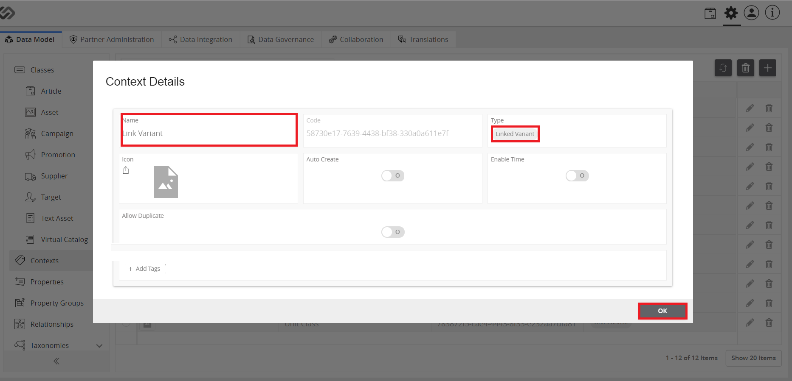

Seasonal Mood Motives¶
The Multilingual Data Model is a feature that provides translations for the various data model items like Attributes, Tags, Classes, etc so that the system can be used in multiple languages.
| Key Term: |
|
| Description: |
|
| Related topics: | |
| Application: |
|
How to do: How to Create Seasonal/Mood Motive¶
To do this, follow these steps: |
- Log in. Click the Administration icon.
- Click *Contexts and then ‘+’ to create a link variant.
# enter the following details: Name, Type as ‘Linked Variant’ and click OK.
In Context Details window, enter the following details: name, code, etc. Select the appropriate tags ( ‘Christmas, Easter, New Year) and click SAVE.
C#. lick on Asset tab to create Motive. Click ‘+’ to create a new asset.
- In the Create window, fill enter details ( Name, enable Nature type), and click Type, then select ‘Motive’, then click cREATE to save the changes.
- Click Default for Default Options.
C#. lick to Select Linked Variant from the drop down.
- In the Linked Variant Relationship section, select ‘Image’ and click SAVE.
- Click on Explore and then DAM.
- Click on the desired image.
- In ‘Overview’ tab, scroll down to Classes. Select the motive from the drop-down menu.
- A link variant section would appear, click on ‘+’ to select the motive ( Christmas, Easter or New Year). Then, click Next
- Click on Next to select an appropriate image related to the motive. Note: the selected image can be dragged to the right section of the wiondow.

- Click Back icon and repeat previous steps to create more variants.

Last updated: Apr 23, 2018